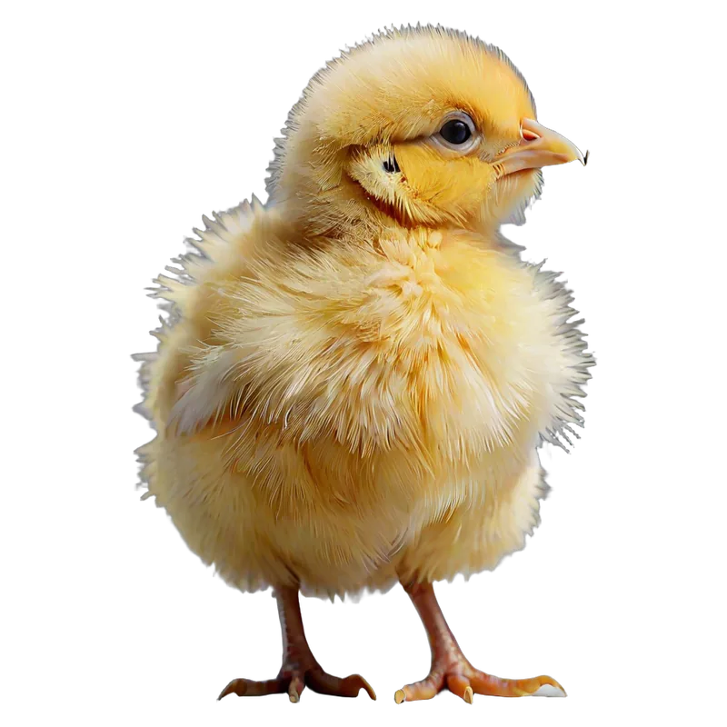
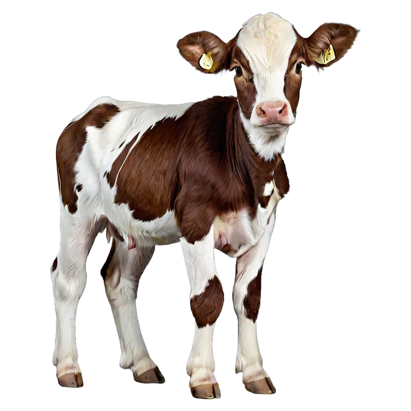
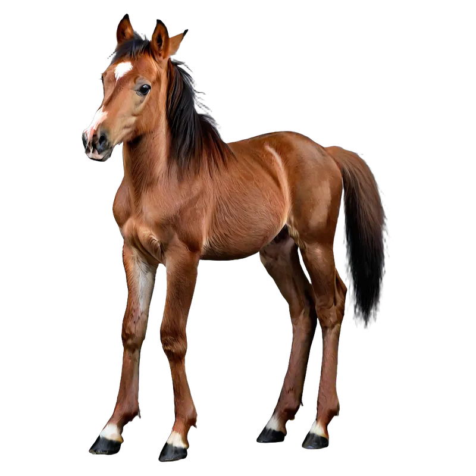
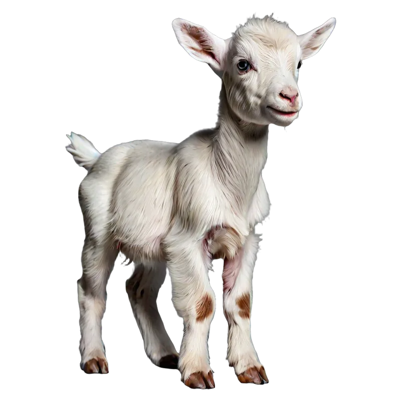
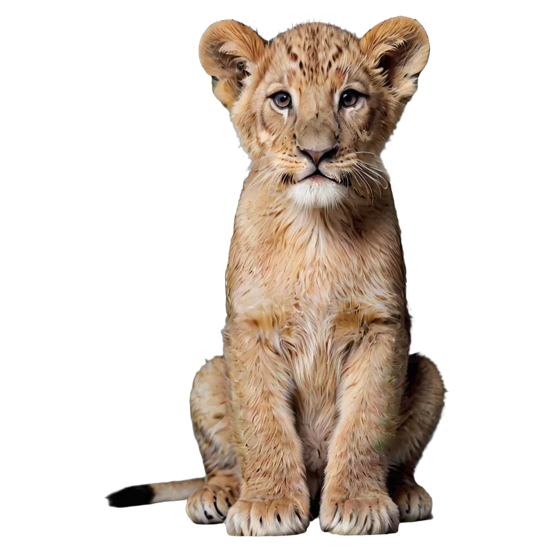
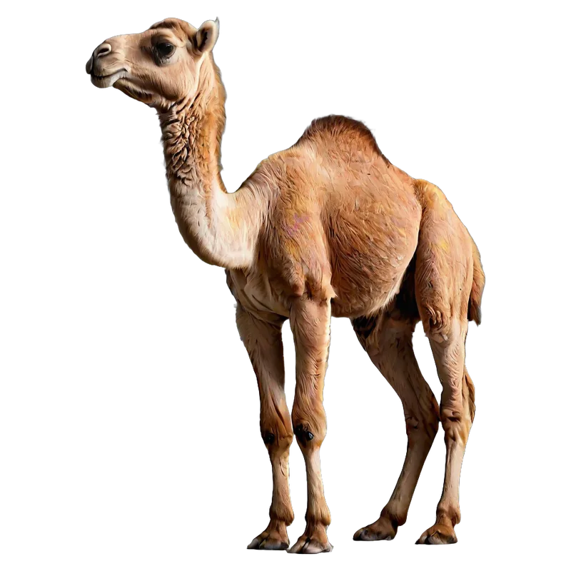
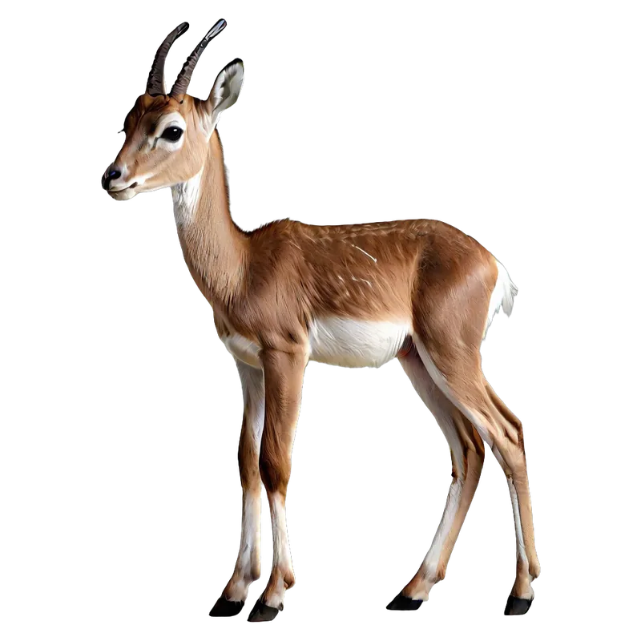
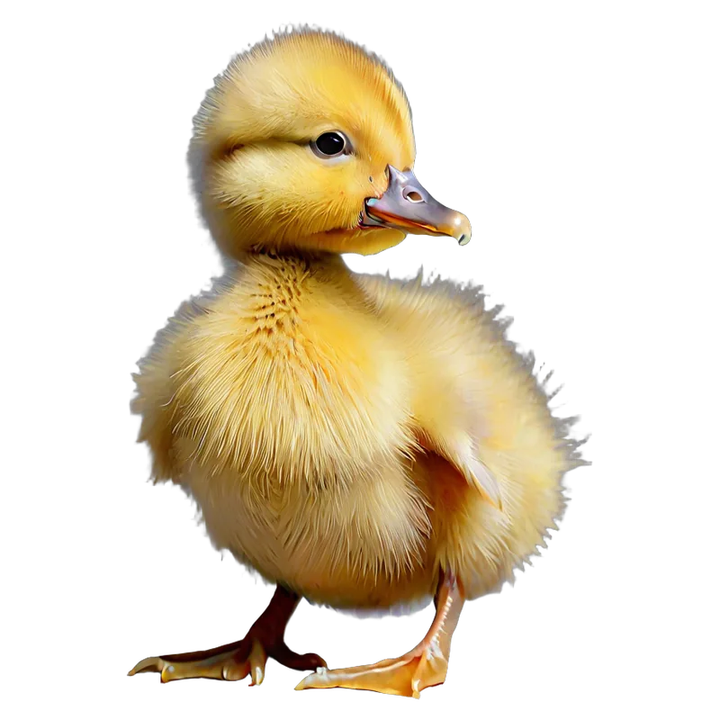

كَتْكُوت
كِتَابِي الْأَوَّل
صِغَارُ
الْحَيَوَانَات
الْحَيَوَانَات

صِغَارُ الضَّاد
13-baby-animals · page 1 · front cover
هَذَا الْكِتَابُ لِـ:
13-baby-animals · page 2 · inside front cover
كَتْكُوت
13-baby-animals · page 3 · item 01
حَمَل

13-baby-animals · page 4 · item 02
عِجْل

13-baby-animals · page 5 · item 03
مُهْر

13-baby-animals · page 6 · item 04
جَدْي

13-baby-animals · page 7 · item 05
شِبْل

13-baby-animals · page 8 · item 06
جَرْو
13-baby-animals · page 9 · item 07
حُوَار

13-baby-animals · page 10 · item 08
خِشْف

13-baby-animals · page 11 · item 09
فَرْخُ بَطّ

13-baby-animals · page 12 · item 10
كُلُّهَا مَعًا!
عِجْل
مُهْر
جَدْي
شِبْل
جَرْو
حُوَار
خِشْف
فَرْخُ بَطّ
13-baby-animals · page 13 · recap
أَيْنَ الشِّبْلُ؟
13-baby-animals · page 14 · question
صِغَارُ الضَّاد
حَيَوَانَاتُ الْبَحْر
الْحَشَرَات
صِغَارُ الْحَيَوَانَات
حَيَوَانَاتُ الصَّحْرَاء
الْآلَاتُ الْمُوسِيقِيَّة
الطَّبِيعَةُ وَالطَّقْس
مَلَابِسِي
طَعَامِي
بَيْتِي
أَلْعَابِي
13-baby-animals · page 15 · inside back cover
صِغَارُ الضَّاد
يتعرّف طفلك على أسماء صغار الحيوانات بصور حقيقية واضحة.
من عمر سنة إلى ٣ سنوات
ISBN / BARCODEprinter places it here
13-baby-animals · page 16 · back cover